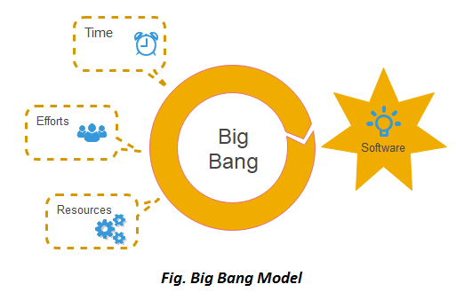

|
Modleo Cascada |
Requisitos-Diseño-Implementación-Verificación-Mantenimiento |
Estructura clara |
Dificultad de cambios |
 |
Modelo V |
Verificación y Validación |
Optimización de la comunicación entre las partes involucradas a través de términos y responsabilidades claramente definidos. |
Repuesta poco flexible |
 |
Modelo Iterativo |
Análisis General-Gestión-Escp. Funcionales del Sistema-Diseño Preliminar |
Se reduce el tiempo de desarrollo inicial, ya que se
implementa la funcionalidad parcial |
El modelo Incremental no es recomendable para
casos de sistemas de tiempo real, de alto nivel de
seguridad, de procesamiento distribuido, y/o de alto
índice de riesgos. |
|
Modelo Espiral |
Planificación-Análisis de Riesgo-Evaluación-Implementación |
Además es posible tener en cuenta mejoras y nuevos
requerimientos sin romper con la metodología, ya que este
ciclo de vida no es rígido ni estático.
|
Modelo costoso |
|  |
Modelo Big Bang |
Tiempo-Esfuerzos-Recursos |
La implementación ocurre en una fecha determinada conocida por todos |
Los detalles pueden ser omitidos en el apuro del cambio |